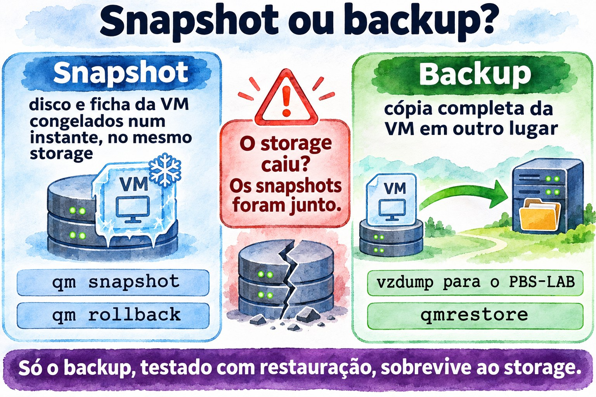
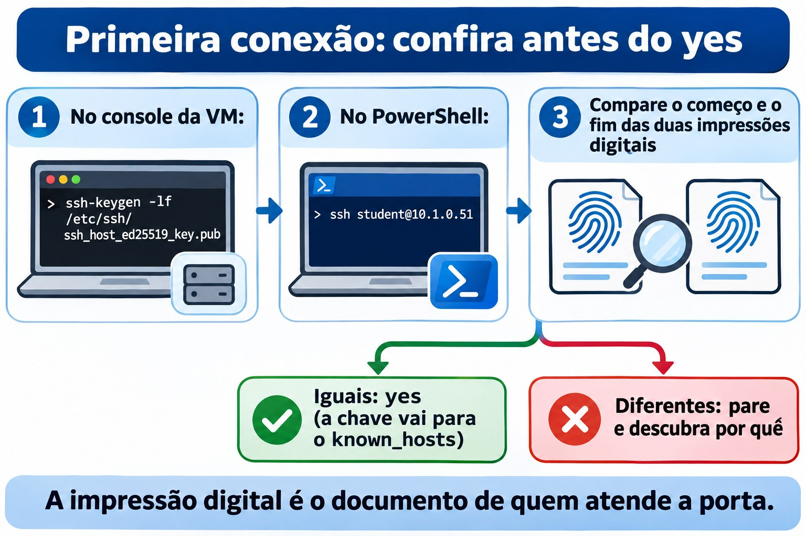
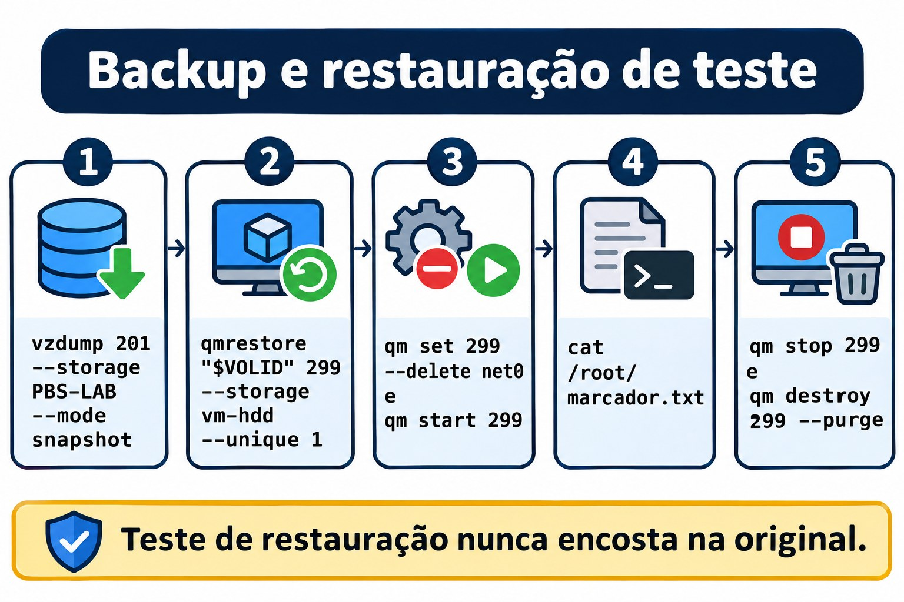
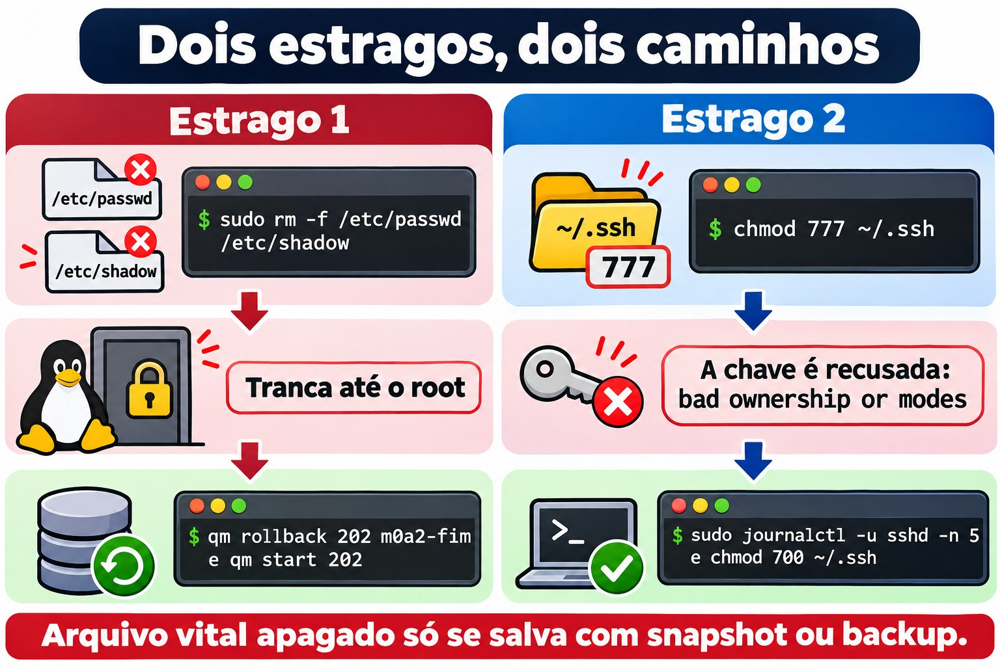

Aula 0.2 · Acesso e proteção
Você passa a entrar nas VMs pelo terminal do Windows com uma chave SSH, ganha sudo nas duas distros e monta a rede de segurança do curso: snapshot para desfazer um erro em segundos e backup no PBS para sobreviver à perda do storage.
| Ficha | Aula 0.2 |
|---|---|
| Módulo | M0 · Laboratório, aula 2 de 2, que fecha o módulo |
| Quando | Semana 1 |
| Ao final você consegue | Entrar nas VMs com ssh rocky-lab usando uma chave Ed25519 só do lab; usar sudo nas duas distros e explicar por que o Debian não tinha; falar com as VMs pelo guest agent; tirar, voltar e limpar snapshots; fazer e testar um backup no PBS |
| Pré-requisitos | Aula 0.1; Windows 10 ou 11, que já trazem o cliente OpenSSH |
| Tempo | Cerca de 2h30 |
| Snapshots | m0a2-inicio no começo; m0a2-fim no meio do lab, porque é ele que salva você no desafio; no fim, a limpeza do módulo deixa só o m0a2-fim |
1 · Aquecimento
Três perguntas antes de começar. Responda de cabeça, por escrito ou em voz alta, sem pesquisar: o palpite errado também ensina, porque a aula vai mostrar onde ele falhou. As respostas estão no Gabarito, no fim da aula.
- Você administra servidores Windows pelo RDP. O que muda quando o acesso remoto é só texto, como no SSH? Pense em banda, em automação e no registro do que foi feito.
- O storage
vm-hdddo cluster é perdido de vez. O snapshotm0a1-fimda VM 201 salva você? Por quê? - No Debian, você vira root com
su, digitausermod -aG sudo studente recebebash: usermod: command not found. Você é root, e o programa existe em/usr/sbin/usermod. O que aconteceu?
2 · Por que importa
Um servidor SSH exposto na internet começa a receber tentativas de login automáticas pouco depois de ligado. Robôs varrem endereços o dia inteiro e testam, na porta 22, combinações de usuário e senha comuns. Contra uma senha, é questão de tentativa e paciência. Contra uma chave, não há o que adivinhar: sem o arquivo da chave privada, a conta não abre. Nesta aula a senha continua ligada, como rede de proteção enquanto você aprende; desligá-la é um passo posterior do curso.
A segunda metade da aula monta a rede de segurança do curso inteiro:
- Snapshot desfaz. É o Ctrl+Z do servidor: volta um erro em segundos, mas mora no mesmo storage do disco.
- Backup sobrevive. É a cópia em outro lugar, no PBS: demora mais para voltar, mas resiste à perda do disco, do nó ou do cluster.
- Backup nunca restaurado é esperança. Por isso o lab termina com uma restauração de verdade, conferida por dentro da VM.
No trabalho com clientes, a regra "snapshot antes de mexer, backup testado antes de confiar" é o que separa um susto de um desastre. E configurar o login por chave e o acesso de superusuário é das primeiras coisas que você faz em qualquer servidor novo, no terminal, conferindo depois de um reboot.
3 · Modelo mental
A chave privada é o seu carimbo; a chave pública é a amostra que fica no cartório.
Pense num cartório que reconhece documentos carimbados. Você deixa lá, uma única vez, uma amostra do seu carimbo: é a chave pública, gravada no arquivo authorized_keys da VM. A cada visita, o cartório põe na mesa um documento novo, que nunca foi carimbado, e pede o seu carimbo nele. Você carimba ali mesmo e devolve; o cartório compara com a amostra e libera a entrada. O carimbo não sai do seu bolso: é a chave privada, que fica no Windows.
Onde a analogia falha, ela falha a favor da segurança. Com um carimbo de borracha, quem tem a amostra pode mandar fazer uma cópia. Com chaves, não: a pública só serve para conferir, e nenhum cálculo viável tira a privada de dentro dela. Por isso a pública pode circular à vontade, e a privada não sai do lugar.
Falta a outra metade: o cartório é mesmo o cartório? Na primeira visita, o ssh mostra a impressão digital da chave de host da VM, uma espécie de selo oficial, e pergunta se você confia. Você confere por um caminho que não passa pela rede, no lab o console do Proxmox, e só então responde yes. O ssh anota o selo no seu known_hosts e, nas visitas seguintes, compara sozinho. Se o selo mudar, ele interrompe a conexão com um aviso em letras maiúsculas.

Leia o diagrama pelas setas numeradas. As setas 1 e 2 respondem quem é o servidor: a VM apresenta a chave de host, e o seu known_hosts confere. As setas 3 e 4 respondem quem é você: a VM manda um desafio, o seu Windows devolve o desafio assinado com a chave privada, e a VM confere a assinatura com a amostra guardada no authorized_keys. A seta tracejada é a única viagem da chave pública, feita uma vez, no passo 5 do lab.
Ponte Windows: você já usa essa ideia. O Windows Hello for Business cria um par de chaves no computador, protege a privada no TPM e registra só a pública no Active Directory ou no Entra ID. E o aviso do RDP de que não consegue verificar a identidade do computador remoto é o mesmo problema que o known_hosts resolve: saber se do outro lado está mesmo o servidor que você pensa.
4 · Conceito em camadas
Essencial
| Termo | O que é | Onde aparece |
|---|---|---|
| SSH | Protocolo de acesso remoto cifrado, na porta 22. O cliente é o ssh; o servidor, o serviço sshd | Cliente no Windows 10 e 11; servidor nas VMs |
| Par de chaves | Duas metades ligadas pela matemática: a privada assina, a pública confere | id_ed25519_lab e id_ed25519_lab.pub, no Windows |
| Ed25519 | O tipo de chave moderno: curto, rápido e seguro | -t ed25519 no ssh-keygen |
| Frase-senha | A senha que cifra o arquivo da chave privada no disco | Pedida pelo ssh-keygen e, uma vez, pelo ssh-add |
| ssh-agent | Serviço que guarda a chave destravada e assina por você | Serviço do Windows, ligado no passo 4 |
| known_hosts | As chaves de host que você já conferiu | %USERPROFILE%\.ssh\known_hosts, no Windows |
| authorized_keys | As chaves públicas aceitas para um usuário | ~/.ssh/authorized_keys, na VM |
| sudo | Roda um comando como root, pedindo a sua senha, e registra no log | Regras em /etc/sudoers, para os grupos wheel e sudo |
| Snapshot | O disco e a ficha da VM congelados num instante, no mesmo storage | qm snapshot; volta com qm rollback |
| Backup | Cópia completa da VM em outro lugar | vzdump para o PBS-LAB; volta com qmrestore |
Ponte Windows: o sudo é primo do UAC. Nos dois, você trabalha sem privilégio e eleva só o que precisa. As diferenças: o sudo pede a sua própria senha, enquanto o UAC pede um clique de consentimento, ou a senha de um administrador se você for usuário comum; o sudo registra cada comando no log; e as regras do sudo podem limitar quais comandos cada pessoa pode rodar.
Aprofundamento
Uma chave só para o lab. A id_ed25519_lab serve só às VMs do curso. Se um dia vazar, você a remove de duas VMs, sem tocar nos servidores de clientes. Separar chaves por ambiente segue a lógica de não repetir a senha do e-mail no banco. O comentário lab-curso, no fim da chave pública, identifica a linha dentro de um authorized_keys que pode ter várias.
IdentitiesOnly. Sem essa linha no config, o ssh oferece ao servidor todas as chaves que o agente guarda, uma por vez. O servidor conta cada recusa como uma tentativa, e o limite padrão do sshd é seis: com muitas chaves no agente, a conexão cai com Too many authentication failures antes de chegar à certa. Com IdentitiesOnly yes, o ssh oferece só a chave indicada no bloco.
Frase-senha e agente. O arquivo da chave privada fica cifrado pela frase-senha: quem copiar o arquivo sem a frase não consegue usá-lo. O agente guarda a chave destravada e assina em nome do ssh. No Windows, o agente é um serviço que guarda as chaves adicionadas protegidas pela sua conta do Windows, e elas continuam lá depois de reiniciar. Na prática, você digita a frase-senha uma vez, no ssh-add, e a proteção do dia a dia passa a ser a sua senha do Windows.
Rigor sobre o desafio. No SSH 2, o servidor não sorteia um desafio separado. As duas pontas combinam, na troca de chaves, um identificador de sessão que nunca se repete, e é ele que o seu Windows assina. O efeito é o do desafio: uma assinatura capturada numa conexão não serve para nenhuma outra.
StrictModes. Antes de aceitar uma chave, o sshd confere o dono e as permissões da pasta pessoal, de ~/.ssh e do authorized_keys. Se outro usuário pudesse gravar ali, poderia plantar uma chave própria; então o sshd recusa e registra Authentication refused: bad ownership or modes. O padrão seguro é ~/.ssh com 700 e authorized_keys com 600, ambos do próprio usuário. No Rocky há uma segunda trava, o SELinux: os arquivos precisam do rótulo ssh_home_t, e restorecon -Rv ~/.ssh devolve os rótulos certos, listando o que mudou.
su e su -. O su sem hífen troca de usuário e mantém quase todo o seu ambiente: a pasta atual e, no Debian, o PATH do usuário comum, que não passa por /usr/sbin. Você vira root com o mapa de um usuário comum. O su - abre um shell de login, com o ambiente do root, o PATH completo e a pasta /root. Regra prática: sempre su -.
Grupos valem no próximo login. O usermod -aG sudo student grava o grupo novo em /etc/group, mas a sua sessão aberta carrega a lista de grupos de quando você entrou, e todo programa que ela abre herda essa lista. O id mostra a sessão; o id student lê os arquivos e já mostra o grupo novo. Cuidado com o -a: sem ele, usermod -G sudo student troca todos os grupos extras do usuário por um só.
fs-freeze e fs-thaw. Num backup com a VM ligada, o Proxmox copia o disco enquanto o sistema continua gravando. Sem o agente, a cópia equivale a puxar a tomada: o journal do sistema de arquivos conserta a estrutura, mas o que ainda estava só na memória fica de fora. Com o agente, o Proxmox pede um fs-freeze: o sistema descarrega os caches e segura as gravações por um instante, a cópia parte daquele ponto, e um fs-thaw libera tudo. O backup sai com os sistemas de arquivos consistentes.
Por que o segundo backup é rápido. O PBS guarda os dados em pedaços e só grava os pedaços que ainda não tem. E, enquanto o processo QEMU da VM for o mesmo (o reboot por dentro não o troca, como você viu na Aula 0.1), o Proxmox anota quais blocos mudaram desde o último backup, num mapa chamado dirty bitmap, e lê só esses.


5 · Rocky × Debian
| Tema | Rocky 9 | Debian 13 |
|---|---|---|
| Grupo que dá sudo | wheel, GID 10 | sudo, GID 27 |
Linha no /etc/sudoers | %wheel ALL=(ALL) ALL | %sudo ALL=(ALL:ALL) ALL |
| sudo depois da instalação | Instalado; o usuário marcado como administrador já está no wheel | Só vem quando a senha de root fica em branco |
su sem hífen | O PATH do usuário já inclui /usr/sbin: o tropeço não aparece | O PATH do usuário não tem /usr/sbin: o usermod some |
| Atualizar o sistema | sudo dnf upgrade | sudo apt update e sudo apt upgrade |
| Serviço SSH | sshd | ssh |
| Trava extra de acesso | SELinux, por rótulos: restorecon acerta o ~/.ssh | AppArmor, por caminhos: nada a fazer no ~/.ssh |
| Onde ver o sshd e o sudo | Journal e /var/log/secure | Só o journal |
qm guest exec do Proxmox | Bloqueado por padrão | Liberado |
6 · Lab guiado
Você vai alternar entre três lugares: o PowerShell do Windows, o shell do nó do Proxmox e o terminal das VMs, primeiro pelo console e, a partir do passo 5, por SSH. Antes de cada bloco, o texto diz onde ele roda.
Em oito pontos do lab você para num bloco Decida: uma situação que acontece de verdade no trabalho, quatro saídas e uma tabela que comenta cada uma. Escolha a letra antes de ler a tabela, e depois leia as quatro linhas, não só a da sua escolha. As alternativas erradas são os erros mais comuns da profissão, e entender por que cada uma falha é o que você ainda vai lembrar amanhã. Os blocos marcados como cenário descrevem algo que não acontece sozinho no lab; os outros você vê na sua tela.
Passo 1 · Snapshot de início
As VMs estão desligadas desde o fim da Aula 0.1. Tire o snapshot antes de ligá-las: com a VM desligada, ele guarda um disco parado, sem nada pela metade. No nó da 201:
qm snapshot 201 m0a2-inicio --description "Aula 0.2: início"
qm start 201No nó da 202:
qm snapshot 202 m0a2-inicio --description "Aula 0.2: início"
qm start 202Não lembra em que nó está cada uma? pvesh get /cluster/resources --type vm, em qualquer nó.
Passo 2 · Confirme os IPs
Os IPs vêm do DHCP e podem ter mudado desde a Aula 0.1. No console de cada VM, depois do login como student:
ip -br aSaída esperada: a placa, provavelmente enp6s18, com UP e o endereço IPv4. Os exemplos desta aula usam 10.1.0.51 para a rocky-lab e 10.1.0.52 para a debian-lab: use os seus. No PowerShell do Windows, confira se a porta 22 responde:
Test-NetConnection 10.1.0.51 -Port 22
Test-NetConnection 10.1.0.52 -Port 22Saída esperada: TcpTestSucceeded : True nos dois.
Passo 3 · Gere a chave do lab
No PowerShell do Windows, como usuário comum:
New-Item -ItemType Directory -Force "$env:USERPROFILE\.ssh" | Out-Null
ssh-keygen -t ed25519 -f "$env:USERPROFILE\.ssh\id_ed25519_lab" -C "lab-curso"O ssh-keygen pede a frase-senha duas vezes. Escolha uma que você lembre: ela protege o arquivo se alguém o copiar.
Preveja: quantos arquivos o comando criou, e qual deles você pode mostrar a qualquer pessoa?
Get-ChildItem "$env:USERPROFILE\.ssh"
Get-Content "$env:USERPROFILE\.ssh\id_ed25519_lab.pub"Saída esperada: os arquivos id_ed25519_lab e id_ed25519_lab.pub, e uma única linha que começa com ssh-ed25519 AAAAC3NzaC1lZDI1NTE5 e termina em lab-curso. Esse começo é igual em toda chave Ed25519: é o nome do tipo de chave, codificado em base64. O arquivo sem .pub é a chave privada: não abra, não copie, não cole em lugar nenhum.
Decida 1 · O ssh-keygen quer sobrescrever. Rode de novo exatamente o mesmo ssh-keygen deste passo. Ele não gera nada: avisa que o id_ed25519_lab already exists e para em Overwrite (y/n)?. Não digite nada ainda. O que você responde?
- A)
y. É o mesmo nome, então é a mesma chave; tanto faz. - B)
n, e descubro de onde veio esse arquivo antes de decidir qualquer coisa. - C)
y, e depois copio a chave pública nova para todo lugar onde a antiga estava. - D) Ctrl+C, apago a pasta
.sshe recomeço do zero.
Escolha a letra antes de olhar a tabela.
| Se você marcou | Resultado | Por quê |
|---|---|---|
| A | ❌ Errada | Mesmo nome não quer dizer mesma chave. O y apaga a chave privada antiga para sempre e cria outra no lugar. Se a antiga estava no authorized_keys de algum servidor, você perde esse acesso e só descobre no dia em que precisar dele. |
| B | ✅ Certa | O n sai sem mexer em nada. Um arquivo que já existe é evidência: leia o comentário no fim da chave pública, com o comando logo abaixo, e ele diz para que a chave foi criada. Se não souber de onde ela veio, gere a nova com outro nome. |
| C | ❌ Errada | Daria para fazer se você soubesse onde a antiga estava, e você não sabe. É o erro da A com mais trabalho e com o risco de esquecer um servidor. |
| D | ❌ Errada | A pasta guarda também o known_hosts, o config e as suas outras chaves. Você destrói tudo para resolver o que um n resolve. |
Para fixar: a chave privada é a única cópia da chave de uma casa. Antes de jogar fora, descubra que porta ela abre.
Responda n e confira a chave que você já tem:
Get-Content "$env:USERPROFILE\.ssh\id_ed25519_lab.pub"Saída esperada: uma linha que começa com ssh-ed25519 e termina em lab-curso, o comentário que você passou no -C. No trabalho, ponha no comentário para que e quando a chave foi criada, como notebook-student-2026. Daqui a dois anos, é essa etiqueta que vai dizer o que cada linha de um authorized_keys abre.
Passo 4 · Ligue o agente
O serviço ssh-agent vem desativado no Windows. Abra um PowerShell como administrador e rode:
Get-Service ssh-agent | Set-Service -StartupType Automatic
Start-Service ssh-agentFeche essa janela e volte ao PowerShell comum, porque a chave é da sua conta:
ssh-add "$env:USERPROFILE\.ssh\id_ed25519_lab"
ssh-add -lO ssh-add pede a frase-senha uma vez. Saída esperada do ssh-add -l: uma linha com 256 SHA256:, a impressão digital da chave e lab-curso (ED25519) no fim.
Passo 5 · Confira a VM e entregue a amostra
Primeiro, a impressão digital da VM, por um caminho que não passa pela rede. No console da 201, logado como student:
ssh-keygen -lf /etc/ssh/ssh_host_ed25519_key.pubSaída esperada: uma linha que começa com 256 SHA256:, seguida da impressão digital, e termina em (ED25519). Deixe o console aberto. Agora, no PowerShell comum, mande a sua chave pública para a VM:
Get-Content "$env:USERPROFILE\.ssh\id_ed25519_lab.pub" | ssh student@10.1.0.51 "mkdir -p ~/.ssh && chmod 700 ~/.ssh && cat >> ~/.ssh/authorized_keys && chmod 600 ~/.ssh/authorized_keys"A primeira conexão pergunta, com pequenas variações conforme a versão do Windows:
The authenticity of host '10.1.0.51 (10.1.0.51)' can't be established.
ED25519 key fingerprint is SHA256:...
This key is not known by any other names.
Are you sure you want to continue connecting (yes/no/[fingerprint])?Compare a impressão digital com a do console, no começo e no fim. Iguais: digite yes. Diferentes: pare e descubra por quê antes de seguir. Depois do yes, o ssh avisa que gravou a chave no known_hosts e pede a senha da conta do student, pela última vez. Se nenhum erro aparecer, a cópia deu certo. Teste o login por chave:
ssh -i "$env:USERPROFILE\.ssh\id_ed25519_lab" student@10.1.0.51Saída esperada: o prompt [student@rocky-lab ~]$, sem pedir senha nenhuma, porque a frase-senha já está com o agente. Ainda dentro da VM, confira o que a cópia criou:
ls -ld ~/.ssh ~/.ssh/authorized_keys
restorecon -Rv ~/.sshSaída esperada: drwx------ na pasta e -rw------- no arquivo, os dois do student. Se o restorecon não imprimir nada, os rótulos do SELinux já estavam certos. Saia com exit.
Repita o passo para a 202: impressão digital no console da debian-lab, cópia para student@10.1.0.52 e teste com ssh -i. O prompt do Debian é student@debian-lab:~$, e lá não existe restorecon: o AppArmor não rotula arquivos.


Decida 2 · A impressão digital não bate. Cenário: na primeira conexão com a 202, a impressão digital que o PowerShell mostra começa e termina diferente da que o console da debian-lab mostrou. A pergunta Are you sure you want to continue connecting (yes/no/[fingerprint])? está na tela. O que você faz?
- A)
yes. É a minha rede, só pode ser a VM. - B)
no, e confiro no console da debian-lab se o IP dela é mesmo o 10.1.0.52. - C)
no, apago oknown_hostse tento de novo. - D) Conecto com
-o StrictHostKeyChecking=no, para a pergunta sumir.
Escolha a letra antes de olhar a tabela.
| Se você marcou | Resultado | Por quê |
|---|---|---|
| A | ❌ Errada | O yes grava a chave desconhecida no known_hosts, e daí em diante o ssh confia nela sem perguntar. Logo em seguida ele pede a senha do student, e você a entregaria para a máquina errada. |
| B | ✅ Certa | Impressão diferente quer dizer outra máquina respondendo nesse IP. No lab, a causa mais comum é o DHCP ter dado o 10.1.0.52 para outra VM, e o ip -br a no console da debian-lab mostra o IP real dela. Se o IP bate e a impressão não, há alguém no meio do caminho: pare e investigue a rede antes de digitar qualquer senha. |
| C | ❌ Errada | É a primeira conexão, então o known_hosts nem tem esse IP: apagar não muda a pergunta. E leva junto a conferência de todos os servidores que você já validou. |
| D | ❌ Errada | Desliga o alarme em vez de procurar o fogo. Com essa opção, o ssh grava qualquer chave nova sem avisar, hoje e toda vez que você repetir o comando. |
Para fixar: a impressão digital é o documento de quem atende a porta. Se ele não bate com o cadastro, você não entrega a encomenda, por mais que a pessoa jure que é ela.
Para saber: no Linux existe o ssh-copy-id, que faz essa cópia num comando só. O cliente do Windows não o traz, daí a linha com Get-Content. Você vai usá-lo quando as VMs passarem a conversar entre si.
Passo 6 · Apelidos no config
Digitar ssh -i ... student@10.1.0.51 toda vez cansa e convida ao erro. O arquivo config guarda apelidos. No PowerShell comum, trocando os IPs pelos seus:
Add-Content -Encoding ascii -Path "$env:USERPROFILE\.ssh\config" -Value @'
Host rocky-lab
HostName 10.1.0.51
User student
IdentityFile ~/.ssh/id_ed25519_lab
IdentitiesOnly yes
Host debian-lab
HostName 10.1.0.52
User student
IdentityFile ~/.ssh/id_ed25519_lab
IdentitiesOnly yes
'@O '@ final precisa ficar no começo da linha, sem espaço antes. E nunca crie esse arquivo com > ou Out-File: no Windows PowerShell, eles gravam em UTF-16, que o ssh não lê. Teste:
ssh rocky-lab hostname
ssh debian-lab hostnameSaída esperada: rocky-lab e debian-lab. O ssh entrou, rodou um único comando e saiu. Esse é o tijolo de toda automação que vem pela frente, inclusive do Ansible.
Passo 7 · sudo nas duas distros
No Rocky, o instalador já pôs o student no grupo wheel. Entre com ssh rocky-lab e confira:
id
sudo -lSaída esperada: 10(wheel) entre os grupos do id e, no fim do sudo -l, depois da sua senha, a linha (ALL) ALL. Saia com exit.
No Debian, o caminho tem uma pegadinha de propósito. Entre com ssh debian-lab e tente:
sudo -vSaída esperada: -bash: sudo: command not found. O pacote não existe. Vire root e tente dar o grupo:
su
usermod -aG sudo studentSaída esperada: bash: usermod: command not found, mesmo como root. É a pergunta 3 do Aquecimento, ao vivo.
Decida 3 · Root, e mesmo assim o comando não existe. Antes de seguir, escolha a explicação:
- A) O pacote do
usermodnão está instalado; falta umapt install. - B) O
susem hífen manteve o PATH do student, e esse PATH não tem/usr/sbin. - C) No Debian, nem o root mexe em grupos enquanto o
sudonão estiver instalado. - D) O nome está errado; o comando certo é
useradd.
Escolha a letra antes de olhar a tabela.
| Se você marcou | Resultado | Por quê |
|---|---|---|
| A | ❌ Errada | O programa está instalado: ls -l /usr/sbin/usermod mostra o arquivo. O shell só não procura nessa pasta, e instalar de novo não muda isso. |
| B | ✅ Certa | O su sem hífen troca o usuário e mantém o ambiente, PATH incluído. No Debian, o PATH de um usuário comum não tem /usr/sbin, onde ficam as ferramentas de administração. O su - abre um login completo de root, com o PATH de root. |
| C | ❌ Errada | Root não depende do sudo; o sudo é só um jeito de virar root. Com o caminho completo, /usr/sbin/usermod -aG sudo student funciona agora mesmo. |
| D | ❌ Errada | O useradd cria usuários, e o student já existe. O nome estava certo; o shell é que não achou o programa. |
Para fixar: su sem hífen é vestir o crachá do chefe e continuar com o mapa do estagiário. Você tem a permissão, mas o mapa não mostra a sala das ferramentas.
Prove a causa: rode echo $PATH. A resposta, /usr/local/bin:/usr/bin:/bin:/usr/local/games:/usr/games, não tem nenhum sbin. Saia com exit e faça do jeito certo:
su -
apt update
apt install -y sudo
usermod -aG sudo student
exitPreveja: de volta como student, o sudo já funciona?
id
id student
sudo -vDecida 4 · O grupo foi gravado, e o sudo ainda recusa. Compare o que apareceu: o id não mostra o grupo sudo, o id student mostra 27(sudo), e o sudo -v, depois de pedir a senha, responde Sorry, user student may not run sudo on debian-lab. O que você faz?
- A) Edito o
/etc/sudoerse ponho o student lá pelo nome. - B) Saio com
exite entro de novo. - C) Reinicio a VM.
- D) Rodo de novo, agora com
sudo usermod -aG sudo student.
Escolha a letra antes de olhar a tabela.
| Se você marcou | Resultado | Por quê |
|---|---|---|
| A | ❌ Errada | O problema não está no sudoers: a regra do grupo sudo já existe lá. Regra por nome, servidor por servidor, vira bagunça, e um erro de digitação no sudoers fora do visudo pode travar o sudo de todo mundo. |
| B | ✅ Certa | A lista de grupos é montada no login. A sessão aberta carrega a lista de quando você entrou, e todo programa que ela abre herda essa lista. Sair e entrar monta uma lista nova, já com o sudo. |
| C | ❌ Errada | Funciona, porque reiniciar também força um login novo, mas derruba tudo que roda na VM para resolver o que um exit resolve. Num servidor de cliente, seria uma janela de manutenção gasta à toa. |
| D | ❌ Errada | O sudo recusa pelo mesmo motivo de antes: a sua sessão ainda não está no grupo. E não há nada a gravar de novo, porque o id student já provou que o grupo está nos arquivos. |
Para fixar: o crachá novo já foi impresso no /etc/group, mas você ainda está com o velho no pescoço. Para trocar, saia pela portaria e entre de novo.
Saia com exit, entre de novo com ssh debian-lab e confira:
id
sudo -v
sudo -lSaída esperada: 27(sudo) no id; o sudo -v pede a sua senha e volta calado; o sudo -l termina com (ALL : ALL) ALL. Agora veja o rastro, nas duas VMs:
sudo journalctl _COMM=sudo -n 5Saída esperada: linhas como student : TTY=pts/0 ; PWD=/home/student ; USER=root ; COMMAND=/usr/bin/journalctl _COMM=sudo -n 5, inclusive o próprio comando que você acabou de rodar. No Rocky, o mesmo rastro vai também para /var/log/secure: confira com sudo tail -n 5 /var/log/secure.

Passo 8 · Atualize e reinicie
Preveja: anote o kernel atual com uname -r nas duas VMs. Se a atualização trouxer um kernel novo, a partir de quando ele vale?
Na rocky-lab:
sudo dnf upgradeNa debian-lab:
sudo apt update
sudo apt upgradeLeia a lista, responda y e espere terminar. Depois, nas duas:
sudo rebootA conexão SSH cai, como esperado. Espere meio minuto, entre de novo e rode uname -r. Kernel novo só vale depois do reboot; até lá, o sistema roda o antigo, que continua instalado como reserva. O Rocky guarda até três kernels; o Debian deixa os antigos até um apt autoremove, que nunca remove o que está rodando.
Passo 9 · Instale o agente
A ficha das VMs tem agent: enabled=1 desde a Aula 0.1: o Proxmox criou o canal, mas ninguém atendia do lado de dentro. Agora instale quem atende. Na rocky-lab:
sudo dnf install -y qemu-guest-agent
sudo systemctl start qemu-guest-agent
systemctl is-active qemu-guest-agent
systemctl is-enabled qemu-guest-agentNa debian-lab:
sudo apt install -y qemu-guest-agent
sudo systemctl start qemu-guest-agent
systemctl is-active qemu-guest-agent
systemctl is-enabled qemu-guest-agentSaída esperada: active e, provavelmente, static. Static quer dizer que o serviço não tem chave de ligar no boot: uma regra do udev o inicia quando aparece a porta virtual do agente, que a linha agent da ficha cria. Se aparecer disabled, rode sudo systemctl enable qemu-guest-agent. Se o dnf disser que o pacote já estava instalado, siga em frente: o que importa é o active.
Agora pelo lado do Proxmox, no nó da 201:
qm guest cmd 201 ping
qm guest cmd 201 network-get-interfacesO ping sem erro quer dizer que o agente respondeu; com o agente parado, a resposta seria QEMU guest agent is not running. O segundo comando devolve as placas da VM com os IPs, que agora aparecem também no Summary da VM, na interface web. E o teste que falhou na Aula 0.1:
qm shutdown 201
qm status 201
qm start 201Saída esperada: o qm shutdown volta em segundos, o qm status diz status: stopped, e a VM liga de novo. Repita os comandos do Proxmox para a 202, no nó dela.
Para saber: o agente é uma porta de root dentro da VM. No Debian, qm guest exec roda qualquer comando como root lá dentro; o Rocky, como o RHEL, bloqueia esse comando por padrão. Quem administra o Proxmox administra, na prática, as VMs com agente: proteja o acesso ao Proxmox como protege o root.
Decida 5 · O agente não responde. Cenário: na 202, o qm shutdown 202 fica parado e termina com erro de tempo esgotado, e o qm guest cmd 202 ping responde QEMU guest agent is not running. É exatamente o que a missão da seção 12 vai procurar nas VMs dos seus clientes. O que você faz?
- A)
qm stop 202, para desligar na hora e seguir o lab. - B) Entro na VM e rodo
systemctl status qemu-guest-agent. - C) Desligo a opção QEMU Guest Agent da VM, para o Proxmox parar de perguntar.
- D) Repito com
qm shutdown 202 --timeout 600.
Escolha a letra antes de olhar a tabela.
| Se você marcou | Resultado | Por quê |
|---|---|---|
| A | ❌ Errada | O qm stop é puxar o cabo da tomada. No lab passa; num servidor com banco de dados, pode estragar o que estava sendo gravado. É o último recurso depois do diagnóstico, nunca no lugar dele. |
| B | ✅ Certa | A mensagem diz onde olhar: o Proxmox chamou o agente e ninguém atendeu. O systemctl status separa as causas. Se o serviço não existe, faltou instalar o qemu-guest-agent. Se existe e está parado, confira a opção QEMU Guest Agent no Proxmox: ela só passa a valer depois de desligar e ligar a VM pelo Proxmox, e um reboot por dentro não basta. |
| C | ❌ Errada | O desligamento passa a ir pelo botão de energia virtual e pode até funcionar, mas o defeito fica escondido: o backup continua sem congelar os discos, que era o motivo deste passo. |
| D | ❌ Errada | Esperar mais não faz um serviço parado responder. Você chega ao mesmo erro, só que dez minutos depois. |
Para fixar: o agente é o interfone da VM. Se ninguém atende, você não arromba a porta nem arranca o interfone; vai ver por que ele está mudo.
Passo 10 · Primeiro backup no PBS
Crie um marcador, para provar depois que o backup guarda o que você pensa. Na rocky-lab:
echo "aula 0.2: antes do backup" | sudo tee /root/marcador.txtPreveja: com o agente instalado, que duas linhas aparecem no log do backup que não apareceriam sem ele? No nó da 201:
vzdump 201 --storage PBS-LAB --mode snapshotSaída esperada, entre outras linhas:
INFO: issuing guest-agent 'fs-freeze' command
INFO: issuing guest-agent 'fs-thaw' command
INFO: Backup job finished successfullyListe os backups da 201:
pvesm list PBS-LAB --vmid 201Saída esperada: uma linha por backup, com um nome como PBS-LAB:backup/vm/201/2026-10-30T...Z e o formato pbs-vm. Se o job semanal já rodou, os backups dele aparecem também.
Passo 11 · Restaure de verdade
Restaure numa VM nova, com outro ID e sem placa de rede, para que nada ameace a 201. No nó da 201:
pvesh get /cluster/nextid --vmid 299
VOLID=$(pvesm list PBS-LAB --vmid 201 | awk 'NR>1 {v=$1} END {print v}')
echo "$VOLID"
qmrestore "$VOLID" 299 --storage vm-hdd --unique 1
qm set 299 --delete net0
qm start 299Linha por linha: a primeira confirma que o ID 299 está livre e o devolve; se reclamar, escolha outro número e troque em todas as linhas. A segunda guarda na variável VOLID o nome do backup mais recente: o awk pula o cabeçalho e fica com a última linha. O --unique 1 sorteia um MAC novo. E tirar a net0 antes do primeiro boot impede que a cópia apareça na rede com a identidade da 201.
Abra o console da 299 na interface web, entre como root e rode:
cat /root/marcador.txtSaída esperada: aula 0.2: antes do backup. O backup guarda o que você pensa. Agora apague a cópia, no nó:
qm stop 299
qm destroy 299 --purgeConfira o número antes do Enter: o qm destroy apaga a ficha e os discos juntos, como você viu na Aula 0.1.
Para saber: para buscar um arquivo só, sem restaurar a VM inteira, a interface web tem o File Restore: no storage PBS-LAB, aba Backups, escolha o backup e navegue pelas pastas dele.
Decida 6 · Restaurar por cima? Cenário: um colega fez o restore com o número errado, qmrestore "$VOLID" 201, e o Proxmox recusou porque a VM 201 já existe. Ele sugere repetir com --force. O que você responde?
- A) Pode, o
--forceexiste para isso. - B) Restaure num número livre, como o 299, com
--unique 1, e sem rede no primeiro boot. - C) Apague a 201 com
qm destroy 201e restaure no lugar dela. - D) Restaure com o mesmo número em outro nó do cluster.
Escolha a letra antes de olhar a tabela.
| Se você marcou | Resultado | Por quê |
|---|---|---|
| A | ❌ Errada | O --force apaga a 201 atual, discos incluídos, e põe o backup no lugar. Tudo o que mudou desde o backup se perde. Para testar o backup, você destruiria a máquina que ele protege. |
| B | ✅ Certa | Teste de restauração não encosta na original. O número livre evita a colisão, o --unique 1 gera um MAC novo, e o qm set 299 --delete net0 impede a cópia de disputar a rede com a 201 quando ligar. É exatamente o passo 11. |
| C | ❌ Errada | É o --force feito à mão, com o mesmo resultado: a original some. E o qm destroy não pergunta se você tem certeza. |
| D | ❌ Errada | O número da VM vale para o cluster inteiro. O qmrestore recusa do mesmo jeito em qualquer nó. |
Para fixar: testar backup é como testar a cópia de uma chave. Você experimenta a cópia na porta sem jogar a original fora antes.


Passo 12 · Snapshot de fim
Com o agente, o snapshot pode ser tirado com a VM ligada: o Proxmox congela os sistemas de arquivos por um instante, como no backup. No nó da 201:
qm snapshot 201 m0a2-fim --description "Fim do M0: SSH por chave, sudo, agent"
qm listsnapshot 201No nó da 202:
qm snapshot 202 m0a2-fim --description "Fim do M0: SSH por chave, sudo, agent"
qm listsnapshot 202Saída esperada: a árvore com m0a1-fim, m0a2-inicio e m0a2-fim, um embaixo do outro, e current no fim. É esse m0a2-fim que salva você no desafio da próxima seção.
7 · Quebre e conserte
Agora, o erro que todo administrador teme: apagar um arquivo de que o sistema inteiro depende. O /etc/passwd liga cada número de usuário a um nome, e o /etc/shadow guarda os hashes das senhas. Na vida real, isso acontece com um rm no terminal errado ou com um script cuja variável veio vazia. Hoje você tem o m0a2-fim, do passo 12: a meta é desfazer o estrago em menos de 2 minutos.
Quebre. Entre com ssh debian-lab e rode:
[ "$(hostname)" = debian-lab ] && sudo rm -f /etc/passwd /etc/shadowA primeira metade é uma trava. O teste entre colchetes só dá verdadeiro na debian-lab, e o && só roda o resto se o teste passar: colou na janela errada, nada acontece. Leve o hábito para o trabalho: comando destrutivo começa conferindo onde está.
Preveja: o que cada comando abaixo responde, nesta mesma sessão?
whoami
id
ls -l /home
sudo -vSaída esperada, na ordem: whoami: cannot find name for user ID 1000; um uid=1000 sem nome, mas com os grupos ainda com nome, porque o /etc/group continua lá; o dono da pasta student aparece como 1000; e sudo: you do not exist in the passwd database. Os programas ainda sabem o seu número. O que se perdeu foi o nome, e o sudo não confia em quem não tem nome.
Agora, em outra janela do PowerShell, tente entrar:
ssh debian-labA chave é recusada e aparece um pedido de senha que nunca vai funcionar. O sshd não conta a estranhos que o usuário não existe: ele finge, para que quem ataca não descubra quais contas existem. Aperte Ctrl+C. No console da 202, tente entrar como root: Login incorrect. O login procura o root no mesmo /etc/passwd. A VM está trancada por dentro, e nem o root entra.
Decida 7 · A VM trancou por dentro. Esta sessão continua aberta, a outra janela não entra e o console recusa até o root. Qual é o caminho mais curto de volta?
- A)
sudo cp /etc/passwd- /etc/passwd, porque o Debian guarda uma cópia de reserva. - B) No nó da 202:
qm rollback 202 m0a2-fime depoisqm start 202. - C) Reiniciar a VM, para o sistema se recuperar na volta.
- D) Recriar o student com
useradd, aqui mesmo nesta sessão.
Escolha a letra antes de olhar a tabela.
| Se você marcou | Resultado | Por quê |
|---|---|---|
| A | ❌ Errada | A reserva existe, mas o sudo precisa achar você no /etc/passwd antes de decidir qualquer coisa: é o you do not exist in the passwd database que você acabou de ver. Sem sudo, você não grava em /etc. Essa cópia salva o dia quando não há snapshot, pelo caminho descrito mais abaixo. |
| B | ✅ Certa | O snapshot guarda o disco inteiro de antes do estrago, e o seu é de minutos atrás. O rollback leva segundos e devolve tudo, inclusive os usuários de sistema que você nem lembraria de recriar. Depois dele a VM fica desligada, por isso o qm start. |
| C | ❌ Errada | Reiniciar não recria arquivo nenhum. Você só fecha a única sessão que ainda estava aberta e volta para uma VM em que ninguém entra. |
| D | ❌ Errada | O useradd precisa de root e grava no próprio /etc/passwd, então aqui ele nem roda. E, mesmo como root, recriaria só o student: o root e os usuários de sistema, como o do sshd, continuariam faltando. |
Para fixar: um snapshot recente é uma máquina do tempo. Quando ela existe, usá-la é o conserto profissional; remendar arquivo de sistema na mão fica para quando ela não existe.
Conserte. Comece a cronometrar. No nó da 202:
qm rollback 202 m0a2-fim
qm start 202O rollback desliga a VM na hora, como o qm stop, e devolve o disco ao instante do m0a2-fim, com os dois arquivos no lugar. Ela volta desligada porque o snapshot não guardou a memória; o qm start liga.
Verifique. Espere uns 20 segundos e, no PowerShell:
ssh debian-lab "whoami; ls -l /home"Saída esperada: student e a pasta student com dono student. Pare o cronômetro. O snapshot continua lá, porque rollback não gasta snapshot: quer treinar de novo, pode.
Sem snapshot, o caminho seria um boot de resgate para copiar de volta o /etc/passwd- e o /etc/shadow-, as cópias de reserva com a versão anterior à última mudança, que pode não ser a certa. Funciona, mas leva bem mais que 2 minutos, e você aprende num módulo mais à frente.
Bônus no Rocky. O defeito mais comum do SSH por chave, ao vivo. Entre com ssh rocky-lab e rode:
[ "$(hostname)" = rocky-lab ] && chmod 777 ~/.ssh
exitPreveja: a próxima entrada usa a chave? No PowerShell:
ssh rocky-labO ssh pede a senha: a chave foi recusada.
Decida 8 · A chave parou de funcionar. Qual é o seu primeiro passo?
- A) Copio a chave pública de novo para o
authorized_keys. - B) Entro com a senha e leio o log do
sshdna VM. - C) Rodo
ssh -v rocky-labno Windows e procuro o motivo ali. - D) Gero uma chave nova, porque esta deve ter estragado.
Escolha a letra antes de olhar a tabela.
| Se você marcou | Resultado | Por quê |
|---|---|---|
| A | ❌ Errada | A chave está lá, intacta. Copiar de novo só cria uma linha duplicada, e o sshd continua recusando, porque o problema é a pasta e não a chave. |
| B | ✅ Certa | Quem recusou foi o servidor, então o motivo está no log do servidor. Uma linha do journalctl diz exatamente o que ele não aceitou. |
| C | ❌ Errada | Ajuda pela metade: o -v mostra que a chave foi oferecida e recusada, mas o servidor nunca conta ao cliente por quê. Você vê o "não" sem ver o motivo. |
| D | ❌ Errada | A chave nova vai para a mesma pasta, com o mesmo defeito, e é recusada do mesmo jeito. Você troca a chave e a fechadura continua emperrada. |
Para fixar: o cliente só sabe que levou um "não"; o porquê fica anotado do lado de quem disse "não".
Entre com a senha e leia o motivo onde ele está, no servidor:
sudo journalctl -u sshd -n 5Saída esperada: uma linha com Authentication refused: bad ownership or modes for directory /home/student/.ssh. Com 777, qualquer usuário da VM poderia gravar na pasta e plantar uma chave própria; o sshd prefere recusar. Conserte:
chmod 700 ~/.ssh
exitssh rocky-lab hostnameSaída esperada: rocky-lab, sem pedir senha.
A lição: os dois estragos cortaram o acesso, mas só um precisou do snapshot. Permissão errada se conserta por dentro, desde que exista outro caminho para entrar. Arquivo vital apagado tranca até o root, e aí só salva o que está fora da VM: snapshot ou backup. No trabalho, antes de mexer em acesso, deixe aberto um segundo caminho: o console do Proxmox, outra sessão SSH, o snapshot de antes.


8 · Armadilhas
| Sintoma | Causa | Saída |
|---|---|---|
ssh-keygen pergunta Overwrite (y/n)? | Já existe uma chave com esse nome, talvez a que você usa nos clientes | Responda n e escolha outro nome: sobrescrever apaga a chave antiga para sempre |
bash: usermod: command not found, mesmo como root | su sem hífen manteve o PATH do usuário comum | exit e su - |
sudo recusa logo depois do usermod -aG | A sessão guarda os grupos de quando você entrou | Saia e entre de novo; id mostra a sessão, id student mostra os arquivos |
Bad configuration option com caracteres estranhos | O config foi gravado em UTF-16, por > ou Out-File | Apague e recrie com Add-Content -Encoding ascii |
Could not resolve hostname rocky-lab | O ssh não achou o apelido: arquivo salvo como config.txt ou nome digitado diferente | ssh -G rocky-lab mostra o que o ssh entendeu; hostname rocky-lab na saída quer dizer que o bloco não foi lido |
| A chave para de funcionar e o ssh pede senha | O sshd recusou a chave: dono, permissões ou rótulo do SELinux em ~/.ssh | Entre por senha ou pelo console e leia o log: journalctl -u sshd no Rocky, -u ssh no Debian |
Too many authentication failures | O agente ofereceu chaves demais antes da certa | IdentitiesOnly yes no bloco do host |
WARNING: REMOTE HOST IDENTIFICATION HAS CHANGED! | A VM foi reinstalada, o IP agora é de outra máquina, ou há alguém no meio do caminho | Confira a impressão digital pelo console; só se a mudança for legítima, ssh-keygen -R 10.1.0.51 e conecte de novo, conferindo |
| O apelido parou de funcionar de um dia para o outro | O DHCP deu outro IP à VM | ip -br a no console e corrija o HostName; a partir da VM 203, o curso usa IP fixo |
QEMU guest agent is not running | O serviço não está rodando dentro da VM | systemctl status qemu-guest-agent na VM; se a opção agent foi ligada com a VM ligada, desligue e ligue pelo Proxmox |
| A VM ficou desligada depois do rollback | O snapshot não guardou a memória | qm start logo depois do qm rollback |
| O storage caiu e os snapshots foram junto | O snapshot mora no mesmo storage do disco | Backup no PBS, testado com restauração |
O qmrestore recusa porque a VM já existe, e alguém sugere --force | O --force sobrescreve a VM existente | Nunca restaure por cima da original: use um ID livre, como o 299 |
| IP em conflito depois de uma restauração | A cópia ligou com a placa de rede da original | --unique 1 no qmrestore e qm set 299 --delete net0 antes do primeiro boot |

9 · Quiz
Responda tudo antes de abrir o Gabarito. As perguntas misturam o que você leu com o que viu no lab.
- Qual dos dois arquivos da chave nunca sai do seu Windows, e qual foi para a VM? Em que arquivo da VM ele está?
- Antes do
yes, você comparou a impressão digital com a do console. O que estava conferindo, e que ataque isso evita? - No Debian, você virou root com
sue ousermodnão existe. Explique e dê o comando certo. - Logo depois do
usermod -aG sudo student, oidnão mostrava o gruposudo, mas oid studentmostrava. Por quê, e como resolver? - Um colega diz que a chave dele parou de funcionar num servidor e que o ssh agora pede senha. Onde você procura o motivo, e quais são duas causas prováveis?
- O storage
vm-hddsumiu. O que sobrevive: om0a2-fimou o backup do passo 10? E, para desfazer um erro de 5 minutos atrás com tudo funcionando, qual dos dois é mais rápido? - No teste de restauração, para que serve o
--unique 1, e por que tirar anet0antes do primeiro boot? - Na Aula 0.1, o
qm shutdownficava esperando e falhava; hoje voltou em segundos. O que mudou, e onde? - Em inglês, como nos fóruns e na documentação: Which command lets a regular user run a single command with root privileges, asking for the user's own password?
- A.
su - B.
sudo - C.
chown - D.
passwd
- A.
10 · Flashcards e cola
Os cartões abaixo também saem no DeepTutor com !cartoes 0.2. Leia a frente, responda em voz alta e só então leia o verso.
| Frente | Verso |
|---|---|
| Onde fica a chave privada do lab? | No Windows, em %USERPROFILE%\.ssh\id_ed25519_lab; nunca sai de lá |
O que o authorized_keys guarda? | As chaves públicas aceitas para aquele usuário, na VM |
O que o known_hosts guarda? | As chaves de host já conferidas, no seu Windows |
Permissões que o sshd exige | ~/.ssh com 700 e authorized_keys com 600, do próprio usuário |
Para que serve IdentitiesOnly yes? | Oferecer só a chave do bloco; evita Too many authentication failures |
| Grupo que dá sudo no Rocky e no Debian | wheel (10) e sudo (27) |
su ou su -? | Sempre su -: shell de login, com o ambiente do root |
Grupo novo não aparece no id | Vale no próximo login; id student já mostra |
| Serviço SSH no Rocky e no Debian | sshd e ssh |
| Onde ver quem usou sudo | journalctl _COMM=sudo; no Rocky, também /var/log/secure |
| O que o agente dá ao Proxmox | Desligamento limpo, os IPs da VM e o congelamento dos sistemas de arquivos no backup |
| Qual sobrevive à perda do storage: snapshot ou backup? | O backup, no PBS |
| Por que restaurar um backup de teste? | Backup nunca restaurado é esperança |
Para saber de cor. Você vai usar estes em quase toda aula daqui para a frente:
ssh rocky-lab # Windows: entra pelo apelido
ssh debian-lab hostname # Windows: roda um comando e sai
sudo -l # VM: o que eu posso com sudo?
qm snapshot 201 m1a1-inicio # nó: o primeiro comando da Aula 1.1
qm rollback 201 m1a1-inicio # nó: desfaz; depois, qm start 201Para consultar. Basta saber que existem; o --help e o man dão o resto:
# Windows (PowerShell)
ssh-keygen -t ed25519 -f "$env:USERPROFILE\.ssh\id_ed25519_lab" -C "lab-curso"
ssh-add -l # chaves no agente
ssh -v rocky-lab # conta cada passo da conexão
ssh -G rocky-lab # o que o ssh entendeu do config
ssh-keygen -R 10.1.0.51 # esquece uma chave de host antiga
# VM
ssh-keygen -lf /etc/ssh/ssh_host_ed25519_key.pub # impressão digital da VM
chmod 700 ~/.ssh; chmod 600 ~/.ssh/authorized_keys
restorecon -Rv ~/.ssh # só no Rocky
sudo journalctl _COMM=sudo -n 5 # quem usou sudo
# nó
qm guest cmd 201 ping # o agente responde?
vzdump 201 --storage PBS-LAB --mode snapshot
pvesm list PBS-LAB --vmid 201
qmrestore "$VOLID" 299 --storage vm-hdd --unique 1
qm delsnapshot 201 m0a1-fim11 · Checklist de saída
- [ ]
ssh rocky-labessh debian-labentram sem pedir senha - [ ] Sei dizer o que ficou no Windows, o que foi para a VM e por quê
- [ ] Conferi a impressão digital de cada VM pelo console antes do
yes - [ ]
sudo -lfunciona nas duas VMs, e sei por que o Debian não tinha sudo - [ ] Sei a diferença entre
suesu -, e quando um grupo novo passa a valer - [ ]
qm guest cmdresponde nas duas VMs, eqm shutdownfunciona - [ ] Fiz um backup no PBS, restaurei na 299, conferi o marcador e apaguei a 299
- [ ] Desfiz o desafio com
qm rollbackem menos de 2 minutos - [ ] Respondi o quiz antes de abrir o Gabarito
Feche o módulo. O M0 termina aqui. Cada snapshot prende no Ceph os blocos antigos do disco, então guarde só o último. No nó de cada VM:
qm delsnapshot 201 m0a1-fim
qm delsnapshot 201 m0a2-inicio
qm listsnapshot 201qm delsnapshot 202 m0a1-fim
qm delsnapshot 202 m0a2-inicio
qm listsnapshot 202Saída esperada: só o m0a2-fim e, abaixo dele, current com You are here!. A Aula 1.1 parte daqui.
12 · Na vida real
Comando digitado uma vez, sem um problema de verdade atrás, some em um dia. Esta seção existe para isso não acontecer: uma missão no seu trabalho e um desafio amanhã, sem olhar a aula.
Missão no trabalho (até amanhã, só leitura). Num nó de um cluster de produção que você administra, descubra quais VMs ligadas estão sem guest agent. Nada aqui muda as VMs: o ping do agente só pergunta se ele está vivo.
for id in $(qm list | awk 'NR>1 && $3=="running" {print $1}'); do
if qm guest cmd "$id" ping >/dev/null 2>&1; then echo "$id agente ok"; else echo "$id SEM agente"; fi
doneRepita em cada nó. Cada VM marcada SEM agente faz backup sem o fs-freeze: a cópia equivale a puxar a tomada no meio da gravação. Num servidor de banco de dados ou de e-mail, é aí que mora o susto. Anote a lista. Corrigir é rápido, mas é mudança em produção: instalar o agente (nas VMs Windows, ele vem no pacote virtio-win) e ligar a opção agent na ficha, que só vale depois de desligar e ligar a VM. Combine uma janela com o cliente.
Depois, prove um backup de cliente. Na interface web, abra o storage do PBS de produção, aba Backups, escolha o backup mais recente de uma VM Linux e clique em File Restore. Navegue até /etc e baixe um arquivo inofensivo, como o hostname. O File Restore só lê o backup: não liga a VM nem muda nada nela. Se o arquivo abrir, você acabou de provar um backup pelo qual responde. Anote a data: é evidência para o cliente e para você.
Amanhã, sem olhar. Sem abrir esta aula, refaça o essencial na debian-lab. Onde travar, use o --help ou o man, como num servidor sem internet. A meta é 15 minutos.
- No nó, tire um snapshot chamado
testeda 202. - No Windows, gere uma chave nova,
id_ed25519_teste, e instale-a no student da 202. - Entre usando só essa chave.
- Volte o snapshot
testee ligue a VM. - Prove que a chave de teste não entra mais. Depois, apague o snapshot
testee os dois arquivos da chave de teste.
Se travar no passo 3: o ssh oferece primeiro as chaves do agente, e a do lab entra antes da de teste. Qual opção da seção 4 resolve isso? A resposta está no Gabarito.
13 · Com o DeepTutor
Abra o DeepTutor e diga que terminou a Aula 0.2. Ele começa com três perguntas de revisão; depois, use:
!quiz 0.2para perguntas novas sobre a aula, uma de cada vez, com correção.!explica known_hostsse a conferência da impressão digital ainda parecer burocracia.!feynman snapshot e backuppara explicar a diferença como explicaria a um cliente; ele dá nota de 0 a 10 e aponta os buracos.!quebra sshpara receber um defeito novo de SSH e diagnosticar no lab.!cartoes 0.2para os flashcards em modo de revisão.!erropara colar um erro do lab ou da missão no trabalho; ele ajuda a ler a mensagem antes de buscar a solução.!revisao 0.2em D+1, D+3, D+7 e D+21. Marque as quatro datas na agenda agora; o D+1 é o dia do desafio sem olhar. Se hoje for o D+1 ou o D+3 da Aula 0.1, rode também!revisao 0.1.
Gabarito
Aquecimento
- Texto passa em qualquer link, até num 4G ruim, enquanto o RDP transmite a tela inteira. Texto vira automação: o mesmo comando roda em um servidor ou em cem, como o
ssh debian-lab hostnamedo passo 6. E texto deixa rastro: histórico, logs, comandos que você cola num chamado. Além disso, os seus servidores Linux nem têm tela gráfica, por escolha sua na Aula 0.1. - Não. O snapshot mora no mesmo storage do disco: perdeu o
vm-hdd, perdeu os dois. Só o backup, em outro lugar, sobrevive. Snapshot desfaz; backup sobrevive. - O
susem hífen manteve o seu PATH, que no Debian não inclui/usr/sbin, onde mora ousermod. Você era root, mas com o mapa de um usuário comum. Resolve comsu -ou com o caminho completo,/usr/sbin/usermod.
Quiz
- A privada,
id_ed25519_lab, nunca sai do Windows. A pública,id_ed25519_lab.pub, foi para o~/.ssh/authorized_keysdo student, na VM. - Que a chave de host que chegou pela rede é a mesma que a VM tem no disco. Se alguém no meio do caminho fingir ser a VM, a impressão digital não bate, e você para antes de entregar a senha. Depois do
yes, oknown_hostsrepete essa conferência sozinho a cada conexão. - O
susem hífen manteve o PATH do student, sem/usr/sbin. Usesu -, que abre um shell de login com o ambiente do root. - A sessão carrega a lista de grupos de quando você entrou: o
idmostra a sessão; oid studentlê os arquivos. Saia e entre de novo. - No log do servidor, entrando por senha, pelo console ou por outra sessão:
journalctl -u sshdno Rocky,journalctl -u sshno Debian. Causas prováveis: dono ou permissões errados em~/.sshou noauthorized_keys, rótulo do SELinux errado no Rocky, ou a linha da chave quebrada ao colar. - Sobrevive o backup do passo 10, que está no PBS; o
m0a2-fimestava novm-hdde foi junto. Para desfazer um erro recente, o snapshot é mais rápido: segundos, contra minutos de restauração. - O
--unique 1sorteia um MAC novo, para a cópia não disputar a identidade de rede da 201. Tirar anet0garante que ela nem apareça na rede: mesmo com outro MAC, a cópia tem o hostname e as chaves de host da 201 e, dependendo do cliente DHCP, pode até pedir o mesmo IP. - Mudou dentro da VM: o
qemu-guest-agentagora está instalado e rodando. A ficha tinhaagent: enabled=1desde a Aula 0.1, então o Proxmox pedia o desligamento ao agente, e ninguém atendia. Hoje o agente atende e desliga o sistema direito. - B. O
sudopede a sua própria senha e roda um único comando como root. Osupede a senha do usuário de destino, o root, e abre um shell inteiro; ochownmuda o dono de arquivos; opasswdtroca senhas.
Amanhã, sem olhar
No passo 3: ssh -o IdentitiesOnly=yes -i "$env:USERPROFILE\.ssh\id_ed25519_teste" student@10.1.0.52. O -o passa na linha de comando qualquer opção do config. Para instalar a chave de teste, use o mesmo Get-Content com ssh do passo 5 da aula, trocando o nome do arquivo. No passo 5 do desafio, a linha do passo 3 deve cair no pedido de senha: a chave sumiu junto com o rollback.